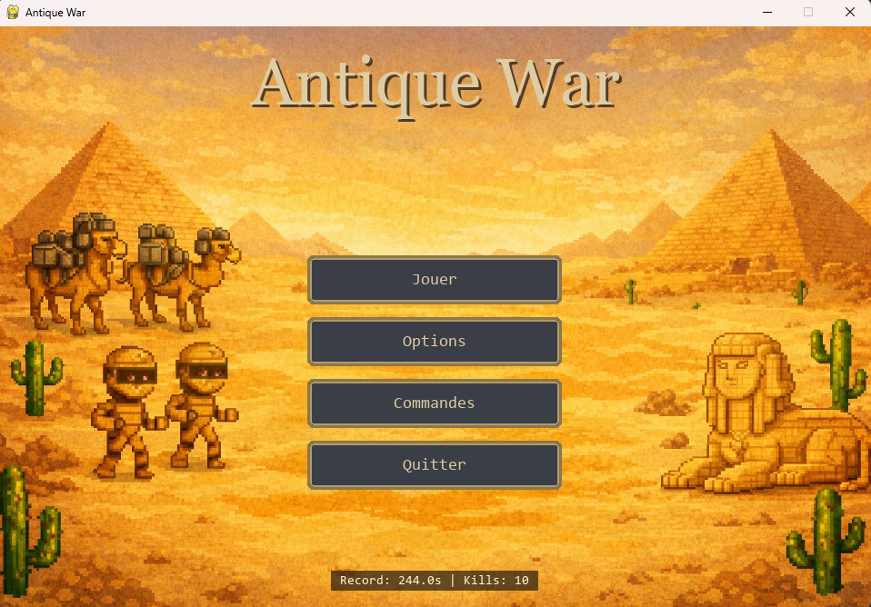
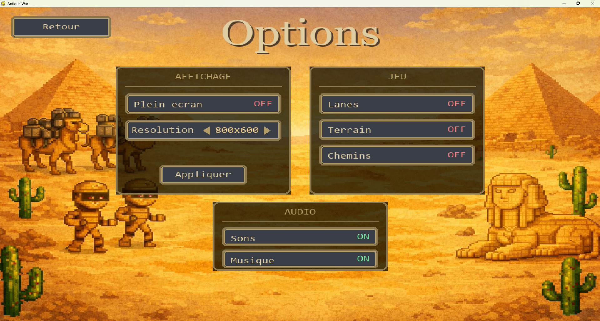

Menus du jeu
Antique War dispose de plusieurs menus permettant au joueur de configurer le jeu et de choisir les paramètres de la partie avant de jouer.
Ces menus sont accessibles avant le lancement d’une partie.
Menu principal

Le menu principal est affiché au lancement du jeu.
Il permet d’accéder aux sections suivantes :
- Jouer : permet de lancer une partie et de choisir le mode de jeu
- Options : ouvre le menu de configuration
- Commandes : affiche et permet de modifier les contrôles
- Quitter : ferme le jeu
Menu Mode de jeu

Le menu Mode de jeu permet de sélectionner le type de partie.
Deux modes sont disponibles :
- Solo (vs IA) : le joueur affronte une intelligence artificielle
- 1v1 local : deux joueurs jouent sur le même clavier
Menu Difficulté

En mode Solo (vs IA), un écran de difficulté permet de définir le niveau de l’intelligence artificielle.
Les niveaux disponibles sont :
- Facile : revenus ennemis ×0,5
- Moyen : revenus ennemis ×1,0
- Difficile : revenus ennemis ×1,5
- Extrême : revenus ennemis ×2,0
Ce choix modifie la production de ressources de l’ennemi.
Menu Options

Le menu Options permet de configurer l’affichage, le jeu et l’audio.
Affichage
- Plein écran : active ou désactive le mode plein écran
- Résolution : permet de choisir la résolution de la fenêtre de jeu
Les changements sont appliqués à l’aide du bouton Appliquer.
Jeu
Ces options modifient l’affichage de certaines informations pendant une partie :
- Lanes : affiche les chemins des lanes
- Terrain : affiche les zones de terrain spécifiques
- Chemins : affiche le trajet emprunté par les unités
Audio
- Sons : active ou désactive les effets sonores
- Musique : active ou désactive la musique
Menu Commandes

Le menu Commandes affiche les contrôles du jeu pour les deux joueurs.
Les commandes sont réparties entre Joueur 1 et Joueur 2.
Actions disponibles
- sélection des lanes (Lane 1, Lane 2, Lane 3)
- invocation des unités (Momie, Dromadaire, Sphinx)
- amélioration de la pyramide
Les touches peuvent être modifiées en cliquant sur la commande correspondante.